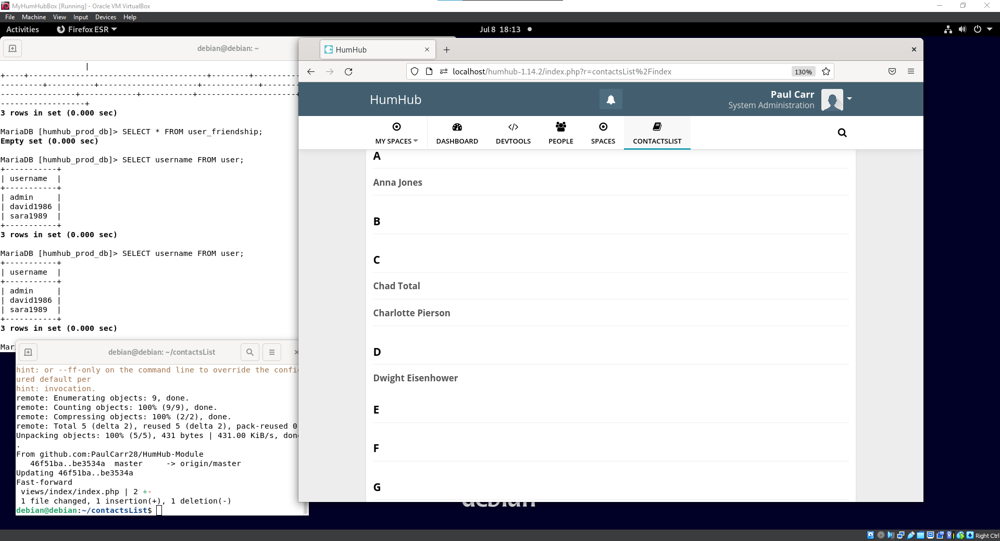

Some Challenges and Successes
While I knew some things going into
this internship, I’d say that the vast majority of things I did involved something I knew little to nothing about.
Initial successes involved being able to aid in the production of a large number of a certain product by
undertaking the task of assembling them while my mentor attended to other matters, allowing for 16 devices
being mostly assembled within just two days. This involved using a CNC machine, hand assembly, and I even got
in some basic soldering so the amount I was able to accomplish in such a short amount of time was valuable.
The challenges began with getting the project I had to contribute to, HumHub, to run and be developed on.
This saw me tackling a wide variety of new tools that I hadn’t used before, such as Apache Web Server, GitHub,
and Linux. Overall I managed to succeed by taking appropriate time to learn about and set up each of the
necessary tools, allowing me to in the end create an efficient development pipeline.
Other challenges came in the actual software development of my plugin. While I was somewhat familiar with
languages such as HTML, CSS, PHP, and SQL, and concepts such as object-oriented programming, developing
this project has required and still requires me to learn about and practice these languages and concepts.
I spent some time learning HTML and CSS, which I applied to developing my project and to making this website.
PHP and SQL languages I’m now somewhat familiar with and continue to learn, currently they are my biggest areas
to learn.
A lot Learned
Wow, the things I learned during this internship. As I said before, coming into this internship, while I knew
some things I absolutely did not know everything. I’d say the major focus of this internship was on website
development, but I also learned a lot about other parts of the IT world.
Starting with stuff that isn’t directly related to web development, my favorite thing that I learned how to do
was how to solder, something I'd wanted to learn for a while but lacked a project to do it on. Soldering is a
major component of building and even repairing electronics, so learning how to do it was incredibly insightful.
Learning about how CNC machines work, and how precise they can be, was also interesting. Many CNC machines have
an automatic tool changer, allowing one to switch between different tools such as differently sized drill bits
to tools made for engraving.
In regards to website development, there’s almost too much to properly catalog. Learning the basics of how to
host a site, such as installing web server software, was super insightful, and has got me thinking about what
I can do for personal projects. Developing my skills with HTML and CSS further has opened doors for me to create
personal projects such as a personal website. Working with the Yii2 framework has given me an idea of how
software development in the real world works, with developers using existing tools to build a large product
quickly. Overall, interning as a part of the executive high school internship program has paid massive returns
on my investment for helping me learn about a career in IT.
